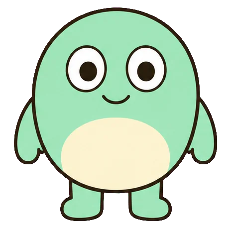
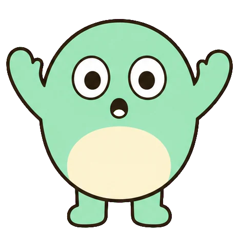
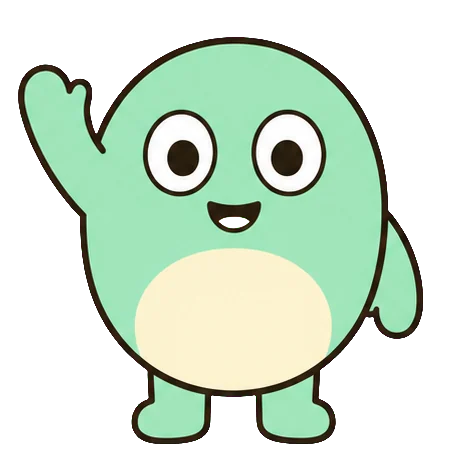

A page with a host
Guides, explainers, kids' products, onboarding — anywhere a character can point at the next thing. Keep it to one mascot and four or five poses; more becomes a cartoon, not a website.
Recipe 20 · Characters
A painted-cutout mascot changes pose as you scroll: idle at the top, reading in the story, surprised at the reveal, waving at the end. Pose first, motion second — the same method as the video pose packs, in SVG.



pose · idle
00 · Idle
One character, four poses. The body is a painted cutout — no vector doll, no morphing face — so every pose reads as a deliberate drawing.
01 · Read
The book appears, the arms come forward and the eyes drop to the page. Pose changes are state, not animation: the next pose is already drawn.
02 · Surprised
Eyes widen, brows lift, the mouth goes round and both arms go up. Use this once per page, at the moment you actually have something to show.
03 · Wave
The arm goes up, the body leans and the smile widens. That is the whole performance — four poses, one page, no video file.
Guides, explainers, kids' products, onboarding — anywhere a character can point at the next thing. Keep it to one mascot and four or five poses; more becomes a cartoon, not a website.
data-pose on the mascot: idle / read / surprised / waverootMargin: -42% 0 -42% sets the scroll trigger band.5s var(--spring) pose transitionsmascot-breathe 4.6 s idle loopUnder reduced motion every transition is removed and the blink stops — the pose still changes instantly, because state is not motion. The SVG is one inline file, no images, no libraries.